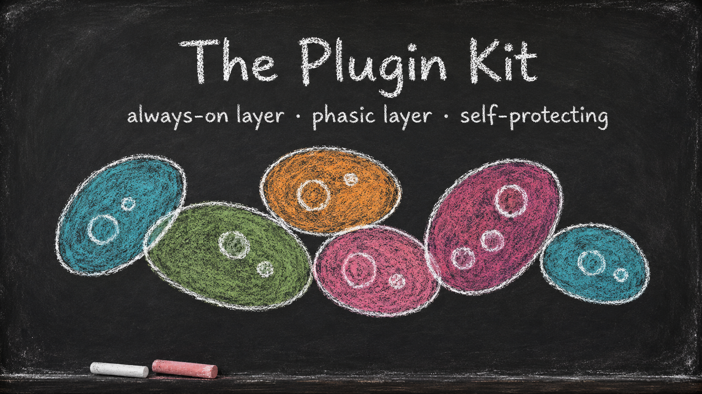
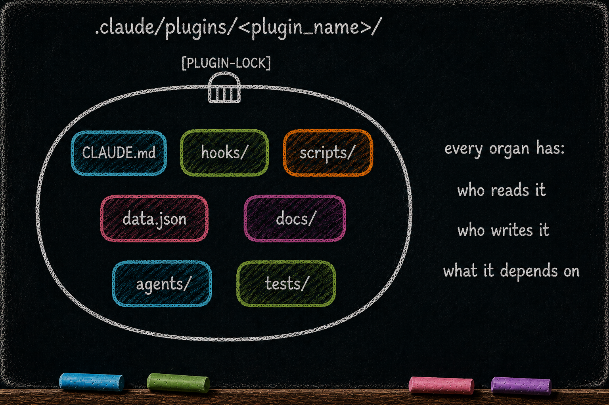

Plugin Kit Foundation
Essay 7.1 — The Plugin Kit, Part 1 of 9. Essay 7 opens here; Parts 2 through 9 follow.

A plugin is a cell.
Essay 5 opened the always-on layer — the plugins that run continuously, each minding one concern, side-by-side with the CLAUDE.md hierarchy. Essay 6 opened the phasic layer — the cycle of phases whose moves are themselves Markov chains. Both layers are built from the same kind of object: a plugin, sitting in its own directory under .claude/plugins/, carrying its own organs. This essay opens that object. ⓘ
The cell metaphor is load-bearing. A plugin is not a collection of loose files; it is a system of cognitive organs that read each other, write to each other, and depend on each other through declared channels. Each organ inside the cell carries the same read / write / depend-on triple: ⓘ
- Who reads it — which subsystem (the LLM, Claude Code itself, another plugin, the human operator) consumes the contents at runtime.
- Who writes it — which ceremony or phase is allowed to mutate it. Most organs have exactly one writer; the security model rests on that exclusivity.
- What it depends on — which other organs must already be in place for this organ to function correctly.
The read / write / depend-on triple is how the cell wall stays porous (organs talk through declared channels) and rigid (organs never reach through undeclared ones). Essay 7 opens the cell organ by organ, naming who reads it / writes it / what it depends on at each step, then closes with a Tier-3 walkthrough of authoring a new plugin from scratch. ⓘ

The journey ahead
Essay 7 covers the plugin kit across the sub-essays listed below:
- Essay 7.1 — Plugin Kit Foundation (you are here) — the cell-as-system frame + this map
- Essay 7.2 — Skeleton: CLAUDE.md, Hooks, and Scripts — the skeleton organs and the hard/soft edit boundary
- Essay 7.3 — The Dual Voice Architecture —
hooks/voice.xmlfor the LLM +scripts/voice.xmlfor the operator - Essay 7.4 —
data.json— The Hidden State — per-plugin private state, script-mediated - Essay 7.5 —
docs/and the Historian —evolution.mdword-capped + the historian ratchet - Essay 7.6 —
agents/and the 80/20 Dispatch Budget — per-plugin subagent scoping - Essay 7.7 — Smaller Organs and Brain-Root Wiring —
config.conf,tests/,template/,settings.local.json - Essay 7.8 — The Lock Ceremony — PLUGIN-LOCK + TEST-LOCK + safe-lock + historian ratchet
- Essay 7.9 — Building a New Plugin — Tier-3 walkthrough
Essays 7.2 through 7.7 deep-dive the plugin organs, one cluster per essay — the parts every mature plugin understands, with some organs intentionally absent in minimal or pure-gate plugins. Essay 7.8 opens the ceremony that protects hard-substrate edits once the plugin is in flight. Essay 7.9 is for the architects in the audience — a walkthrough of putting the kit to use, authoring a new plugin end to end.
We start with the universal skeleton — CLAUDE.md, hooks, and scripts — the load-bearing organs Essay 7.2 deep-dives. ⓘ
A consulting practice could organize its own seed agent’s plugin around a [CLIENT-INTAKE] ceremony built from the same cell skeleton; the organ list (hooks, scripts, hidden state) transfers wholesale. Nothing in the kit is mathematically enforced; the protections are friction (PLUGIN-LOCK gating hard-substrate edits, test-pass-or-revert undoing failed runs, dual voices coaching the operator and the LLM separately) plus operator discipline. Soft memory surfaces like docs, voice files, and agent definitions move through phase discipline instead. ⓘ
Essay 7.1 — The Plugin Kit, Part 1 of 9.
Previous: Essay 6.10b — The Plan File — Long-Horizon Memory — closes the markov phasic brain series. Next: Essay 7.2 — Skeleton: CLAUDE.md, Hooks, and Scripts — the skeleton organs and the hard/soft edit boundary.
Comments